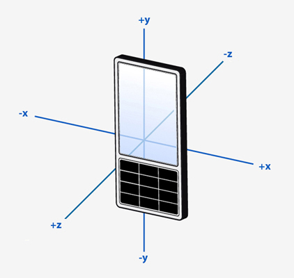

QAccelerometerReading Class
The QAccelerometerReading class reports on linear acceleration along the X, Y and Z axes. More...
| Header: | #include <QAccelerometerReading> |
| CMake: | find_package(Qt6 REQUIRED COMPONENTS Sensors) target_link_libraries(mytarget PRIVATE Qt6::Sensors) |
| qmake: | QT += sensors |
| Inherits: | QSensorReading |
Properties
Public Functions
| void | setX(qreal x) |
| void | setY(qreal y) |
| void | setZ(qreal z) |
| qreal | x() const |
| qreal | y() const |
| qreal | z() const |
Detailed Description
QAccelerometerReading Units
The scale of the values is meters per second squared. The axes are arranged as follows.

A monoblock device sitting at rest, face up on a desk will experience a force of approximately 9.8 on the Z axis (ie. towards the roof). This is the proper acceleration the device experiences relative to freefall.
Property Documentation
[read-only] x : const qreal
This property holds the acceleration on the X axis.
The scale of the values is meters per second squared.
Access functions:
| qreal | x() const |
See also QAccelerometerReading Units.
[read-only] y : const qreal
This property holds the acceleration on the Y axis.
The scale of the values is meters per second squared.
Access functions:
| qreal | y() const |
See also QAccelerometerReading Units.
[read-only] z : const qreal
This property holds the acceleration on the Z axis.
The scale of the values is meters per second squared.
Access functions:
| qreal | z() const |
See also QAccelerometerReading Units.
Member Function Documentation
void QAccelerometerReading::setX(qreal x)
Sets the acceleration on the X axis to x.
See also x().
void QAccelerometerReading::setY(qreal y)
Sets the acceleration on the Y axis to y.
See also y().
void QAccelerometerReading::setZ(qreal z)
Sets the acceleration on the Z axis to z.
See also z().